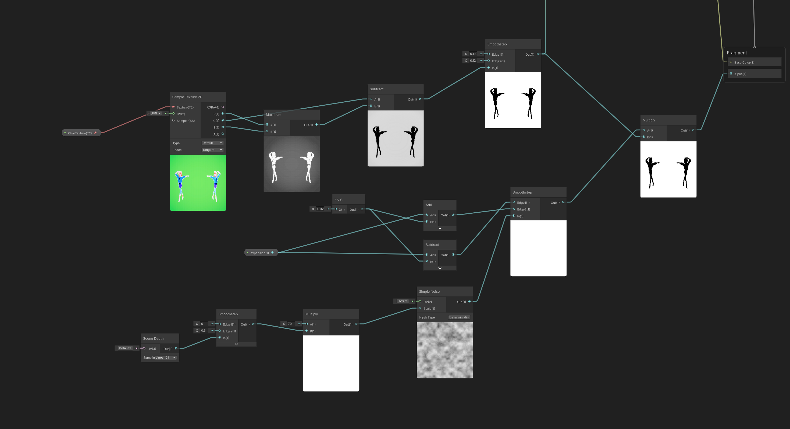
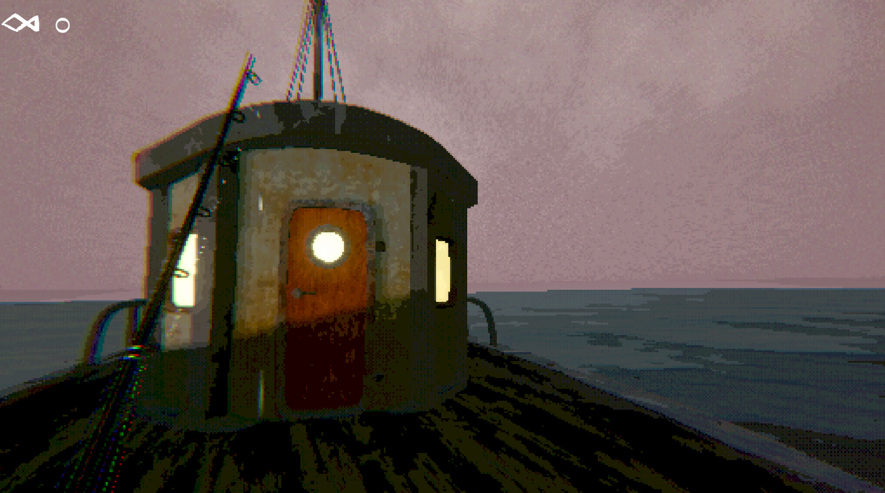

Fullscreen effects and compositing in Unity URP
A series of fullscreen effects and post-processing implemented across a variety of game projects. Many of these effects are created in shader graph and HLSL, capitalizing on built-in rendering tools to create distinct aesthetics and push the visual limitations of the engine.
Seamless World Change for Pose Pose Execution
This effect simulates a seamless background change in 3D. It uses a camera that only renders the characters, isolating them from the background. The fullscreen shader uses this as a mask, compositing in a render texture that holds the objects and particles of the new scene. The logic of this effect is heavily inspired by traditional green screen technology. To create the cleanest transition possible, this shader uses three different cameras, and a depth based noise texture to unveil the new background.

IMAGERetro PSX Horror with Underfished
Buckshot Roulette inspired the retro-style aesthetic for this game.
The posterization and dither effects are combined in a full-screen shader.
The posterization is achieved by converting the image’s colorspace to HSV, then clamping
the outputs of the “value” using a series of math operators before converting the image back to RGB.
To achieve the pixelization effect,
the camera doesn’t actually render the scene, but it outputs a render texture that displays a
downscaled version of what the camera would actually be seeing. The video showcases how these effects
change in relation to the game’s day-night cycle.

IMAGEShader Stacks & Global Volume Compositing
I use layers of fullscreen effects and color-grading to refine the visual style and enhance the assets in the scene.
- Color-grading and tonemapping layer to refine palette and increase visual appeal
- Posterization/color-quantization layer that significantly limits tone variation, mixes nicely with film grain
- Fine screen UV manipulation that distorts image to achieve paint splatter effect
- Fresnel edge detection to add a soft glow to edges
- Backface outlines created by duplicating screen and offsetting UVs of scene depth
- CRT-style filter that adds slight chromatic aberration, emission, and tint
- Color-grading, tonemapping, and bloom via Global Volume object
- Dither and slight pixelization to push retro aesthetic